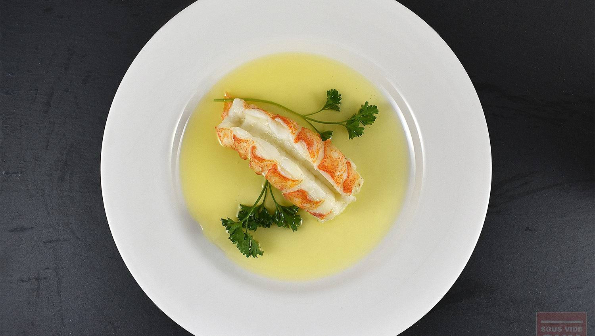

Sous Vide Lobster Tail
Prep Time:
Cook Time:
Total Time:
Sous vide lobster is crazy simple—just drop the lobster tails and some butter in a bag, cook for an hour, and serve. It's 100% better than broiling, boiling, or steaming.
Ingredients
- 2 Lobster Tails
- 10 tablespoons Butter
- Fresh Parsley
Time/Temperature
- 120°F for 1 hour – Soft, translucent
- 130°F for 1 hour – Tender
- 140°F for 1 hour – Firm
Instructions
- Preheat water bath to your desired temperature (see temperature chart).
- Submerge frozen lobster tails in a bowl of cold water for approximately 30 minutes to defrost and loosen up.
- Cut shell down the middle with kitchen shears and gently pull shell apart, avoiding tearing the meat.
- Remove lobster meat from shell and de-vein if necessary.
- Place lobster tails, fresh parsley, and 2–3 tablespoons of butter into a heavy-duty Ziploc bag. Use water displacement method to seal.
- Cook sous vide for 1 hour.
- Melt 6–8 tablespoons of butter in a saucepan over medium heat. For clarified butter, continue heating until milk solids separate.
- Serve lobster tail with butter on the plate or in a side dish.